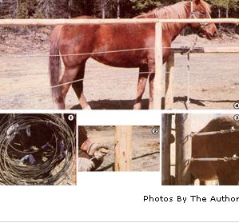

Even if your budget is as bedraggled as a pole bean patch in Mexican beetle season, you can keep your four-legged livestock down on the farm with a fence made from old powerline cable ... the heavy aluminum type with a sturdy steel core that's generally used for high-tension wires.
Although utility companies recycle cable themselves in many instances, there are installations-particularly if schools, large industries, and other heavy users are concerned-where the consumer group owns the wire and entrance equipment. When new lines are put up at such locations, it's often not economical for the organization to bother scavenging the old wires for sale . . . so if you can locate one of these fence "mines", you'll be able to pocket the cash you might otherwise have had to spend on barbed wire or on a board enclosure!
Though scavenged cable will often have been exposed to the elements for years, aluminum and stainless steel oxidize slowly so-even if you turn up your supply at the site of a long-defunct mine or sawmill-the wire itself will still be in good shape. (Of course, you'll have to get permission to remove the material.)
My partner and I located our cable supply behind an old iron-pelletizing plant, where the trees had literally begun to absorb the wire. The factory was still in operation (new powerlines had been run in years before), and all we had to do was to sign a risk release form at the plant office before embarking on our project.
We took along an axe, a pair of heavy cable cutters, and some strips of sturdy cloth. Although we were careful to keep each strand as long as possible, we did use the cable cutters at points where the line was deeply embedded in a tree or joined-usually by very rusty clamps-to fallen utility poles . . . while the axe came in handy for chopping our treasure out of small branches or dead tree trunks that had started to grow around the lines. As we collected the cable, we rolled it into loose coils and tied them together with the rags. We then loaded our bounty into the car and drove home, without having forked over any cash for our "new" fence material.
Back at the farm, we measured the area of our would-be corral . . . cut some heavy poles from our woodlot ... applied preservative to the portions that would be buried in the ground . . . and got busy put ting the uprights in place. The fenceposts were spaced eight feet apart (measured from the center of one to the center of the next) and set three feet into the earth. Once that was done, we spiked top rails from post to post . . . to provide extra stability and eye appeal.
Next, a trusty old hand auger was used to drill 3/4-inch holes through the wooden uprights, at one-inch intervals, from top to bottom. We then ran lengths of cable through the holes . .. attached them to heavy eyebolts on the pole that would serve as one side of our future gate . .. and laced them into turnbuckles at the far side of the pen. It took only a few twists of the tighteners to make the lines taut . . and that sure beats stretching stubborn barbed wire!
To complete the animal enclosure, we added gates made of split rails and lumber scraps . . . then turned our critters into their new home.
The heavy cable fence is strong, pleasing to look at, and-most important- safe for our equine and bovine friends. It was also easier, and less time-consuming, to install than conventional fencing would have been. And, if you build one, you may well find that a recycled fence saves you enough money to buy a new cow, pony, horse, steer, donkey, buffalo, or llama to put into your now protected pasture!
|
 |
|
|